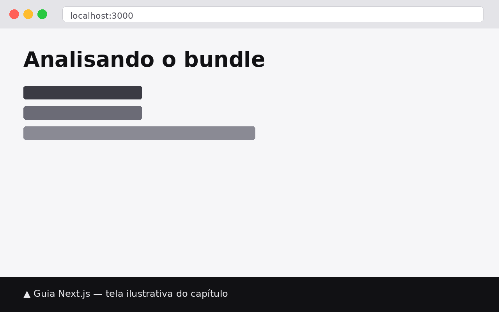

Analisando o bundle: @next/bundle-analyzer e import dinâmico
O app da Ana estava "pesado": o primeiro carregamento levava segundos porque uma biblioteca de gráficos entrava junto com a página inicial. Nesta aula você aprende a enxergar o que pesa no pacote com o bundle analyzer e a empurrar o que é pesado para um carregamento sob demanda com import dinâmico (next/dynamic).
- Instalar e configurar o
@next/bundle-analyzer(mapeia cada chunk por tamanho) - Ler o gráfico:
vendor(node_modules) vs código da página vs chunks sob demanda next/dynamiccomssr: falsepara componentes só de clienteloading(fallback enquanto o chunk baixa) enext/scriptpara scripts de terceiros- Regra prática: o First Load JS precisa caber no "orçamento" (~170 kB gzip sugerido)
A ideia: a mala de viagem e o guarda-roupa extra
Carregar o bundle inteiro na primeira visita é como levar a casa inteira na mala: a mala fica pesada, o avião demora para decolar e você nem usa metade das roupas. O bundle analyzer é a balança da mala: ele mostra quanto cada "roupa" (biblioteca) pesa no pacote. O import dinâmico é o guarda-roupa extra que você aluga no destino: bibliotecas grandes (gráfico, editor de texto rico, mapa) ficam num chunk separado e só baixam quando a página realmente precisa delas.
No Next.js, o App Router já separa o código por rota automaticamente (cada página só baixa o que usa). O que sobra para você é tirar do pacote inicial as bibliotecas que uma minoria das páginas usa. O next/dynamic faz isso com import() por baixo dos panos: o componente vira um chunk próprio, carregado quando o componente vai aparecer — com um loading no lugar enquanto isso.
Instalando e rodando o analisador
npm install @next/bundle-analyzer
const withBundleAnalyzer = require('@next/bundle-analyzer')({
enabled: process.env.ANALYZE === 'true',
});
/** @type {import('next').NextConfig} */
const nextConfig = {};
module.exports = withBundleAnalyzer(nextConfig);
ANALYZE=true npm run build # abre sozinho no navegador: .next/analyze/client.html e server.html
Page Size First Load JS ┌ ○ / 5.2 kB 102 kB ← / está leve ├ ○ /dashboard 180 kB 340 kB ← o gráfico entrou aqui! └ ○ /loja 12 kB 114 kB Shared chunks (vendor): react, next, libs comuns — 87 kB
Tirando o peso do caminho: next/dynamic
import dynamic from 'next/dynamic';
// O gráfico (biblioteca pesada) vira um chunk separado, carregado só aqui
const Grafico = dynamic(() => import('@/components/Grafico'), {
ssr: false, // roda só no navegador (gráfico não faz sentido no servidor)
loading: () => <p>📊 Carregando gráfico…</p>,
});
export default function Dashboard() {
return (
<main>
<h1>📊 Dashboard</h1>
<p>Este texto aparece na hora — o gráfico vem depois.</p>
<Grafico />
</main>
);
}
import Script from 'next/script';
export default function Home() {
return (
<>
<h1>Página leve</h1>
{/* script de terceiro (chat, analytics) só depois da hidratação */}
<Script src="https://cdn.chat-exemplo.com/widget.js" strategy="lazyOnload" />
</>
);
}
Missão: no código, o componente <GraficoPesado /> está importado direto — ele "entra na mala" junto com tudo. Troque para carregamento sob demanda usando const GraficoPesado = React.lazy(() => new Promise(...)) e envolva no <React.Suspense>. Rode: o texto aparece na hora e o "gráfico" chega 2s depois, num chunk separado. Depois clique em Verificar missão.
// no Next.js: import dynamic from 'next/dynamic';
// dynamic(() => import('./Grafico')) ≈ React.lazy(() => import(...))
function App() {
// TODO: const GraficoPesado = React.lazy(() => new Promise(res => setTimeout(() =>
// res({ default: () => <p>📊 Gráfico carregado (chunk separado!)</p> }), 2000)));
const GraficoPesado = () => <p>📊 (aqui entraria o gráfico pesado no pacote inicial)</p>;
return (
<div>
<h1>📊 Dashboard</h1>
<p>✅ Este texto não espera o gráfico.</p>
{/* TODO: envolva em <React.Suspense fallback={<p>carregando…</p>}> */}
<GraficoPesado />
</div>
);
}function App() {
const GraficoPesado = React.lazy(() => new Promise(res => setTimeout(() =>
res({ default: () => <p>📊 Gráfico carregado (chunk separado!)</p> }), 2000)));
return (
<div>
<h1>📊 Dashboard</h1>
<p>✅ Este texto não espera o gráfico.</p>
<React.Suspense fallback={<p>📊 carregando…</p>}>
<GraficoPesado />
</React.Suspense>
</div>
);
}
Quando dá errado
dynamic(..., { ssr: false }) dentro de um Server Component. O Next.js proíbe na hora — ssr: false só vale em Client Component:Error: ssr: false is not allowed with next/dynamic in Server Components. → marque o arquivo com 'use client' OU remova o ssr: false.
window durante o render e quebra o SSR com "window is not defined". Solução: ssr: false num componente de cliente, ou cheque typeof window !== 'undefined'.ReferenceError: window is not defined
at render (node_modules/biblioteca-grafico/...)
→ dynamic(() => import('./Grafico'), { ssr: false }) dentro de 'use client'
Exercícios
Para que serve o @next/bundle-analyzer?
Uma biblioteca de gráficos de 300 kB usada só no dashboard deve ser carregada com:
ssr: false no next/dynamic só é permitido em:
Complete o comando que gera a análise do bundle:
Complete a opção que tira o componente do render do servidor: